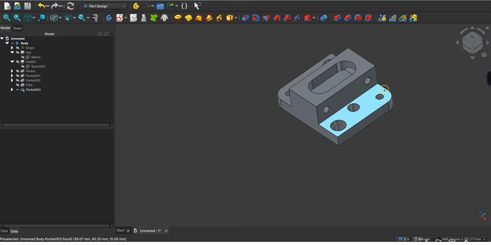
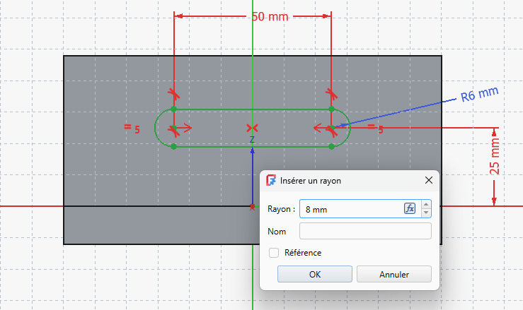

Parametrisch wijzigenModification paramétriqueParametric editing
Hier plukken we de vruchten van parametrisch werken. Je hoeft niets opnieuw te tekenen: je opent een bestaande stap in de modelboom, verandert een getal, en het hele model past zich aan. Zo maak je van je bakje in seconden een versie voor een andere printplaat.Ici, on récolte les fruits du paramétrique. Rien à redessiner : on ouvre une étape de l'arbre, on change un nombre, et tout le modèle s'adapte. Votre boîtier devient en quelques secondes une version pour un autre circuit.Here we reap the rewards of parametric work. No redrawing: open a step in the model tree, change a number, and the whole model adapts. Your box becomes a version for another PCB in seconds.
- een bestaande feature (zoals Pad) bewerken via de modelbooméditer une fonction existante (Pad) via l'arbreedit an existing feature (Pad) via the tree
- een maat in een onderliggende schets aanpassenmodifier une cote dans le croquis sous-jacentchange a dimension in the underlying sketch
- begrijpen waarom goede constraints wijzigingen veilig makencomprendre pourquoi de bonnes contraintes sécurisent les modificationsunderstand why good constraints make edits safe
Workbench: de Modelboom (tab Model).Atelier : l'arbre (onglet Modèle).Workbench: the model tree (Model tab).
Wijzigen: dubbelklik een feature → Taken-paneel heropent. Voor maten: klap open met ▸ en dubbelklik de Schets.Modifier : double-clic → Tâches. Cotes : ▸ + double-clic croquis.Edit: double-click → Tasks reopens. Dimensions: ▸ + double-click the Sketch.
- Dubbelklik de Pad.Double-clic le Pad.Double-click the Pad.
- Lengte 25 → 30 → OK.Longueur 25 → 30.Length 25 → 30.
- Breedte: ▸ → dubbelklik Schets → dubbelklik maat → 90 → OK.Largeur : ▸ → croquis → cote → 90.Width: ▸ → Sketch → dimension → 90.
01Wijzig de bron, niet het resultaatModifier la source, pas le résultatEdit the source, not the result
Het 3D-volume dat je ziet, is het resultaat van een keten stappen in de modelboom (schets → Pad). Je wijzigt zo'n model nooit door aan het eindresultaat te "duwen", maar door terug te gaan naar de stap die je wil veranderen. Verander je die stap, dan herrekent FreeCAD de hele keten erna.Le volume affiché est le résultat d'une chaîne d'étapes (croquis → Pad). On ne modifie jamais en « poussant » le résultat, mais en revenant à l'étape voulue. FreeCAD recalcule alors toute la suite.The solid you see is the result of a chain of steps (sketch → Pad). You never edit by "pushing" the result, but by going back to the step you want to change. FreeCAD then recomputes the whole chain.
02Een feature bewerken (de hoogte)Éditer une fonction (la hauteur)Editing a feature (the height)
- 1Dubbelklik op de Pad in de modelboom.Waarom: dubbelklikken opent de instellingen van die bewerking opnieuw.Double-cliquez sur le Pad dans l'arbre.Pourquoi : cela rouvre les réglages de l'opération.Double-click the Pad in the tree.Why: it reopens that operation's settings.
- 2Geef een nieuwe hoogte (bv. 30 mm) en bevestig.Waarom: het volume groeit of krimpt mee; je footprint blijft gelijk.Entrez une nouvelle hauteur (30 mm), validez.Pourquoi : le volume change, l'empreinte reste.Enter a new height (30 mm), confirm.Why: the solid grows/shrinks; the footprint stays.

03Een maat in de schets aanpassenModifier une cote du croquisChanging a sketch dimension
Wil je de afmetingen van de bodem wijzigen, dan ga je een stap dieper: klap de Pad open, dubbelklik de onderliggende schets, en dubbelklik daar de maat die je wil veranderen. Je typt een nieuwe waarde in en bevestigt — net als bij het wijzigen van een straal in de figuur hieronder.Pour changer les dimensions du fond, allez plus profond : dépliez le Pad, double-cliquez le croquis, puis la cote à modifier. Saisissez une valeur, comme pour le rayon ci-dessous.To change the bottom's size, go one level deeper: expand the Pad, double-click the underlying sketch, then double-click the dimension to change. Type a new value, like the radius below.

Een goed bepaalde (groene) schets wijzigt voorspelbaar: verander je de breedte van 80 naar 90 mm, dan blijft de rest netjes vastliggen. Bij een nog niet vastgelegde schets kan een wijziging dingen onverwacht laten verspringen — vandaar het belang van H05.Un croquis vert se modifie de façon prévisible. Un croquis sous-contraint peut faire « sauter » des éléments — d'où l'importance du H05.A fully constrained (green) sketch edits predictably. An under-constrained one can make things jump unexpectedly — hence the importance of H05.
Dit is precies waarom we parametrisch tekenen: krijg je een andere printplaat, dan pas je twee maten aan (breedte en diepte) en je bakje klopt weer. Geen nieuw ontwerp nodig. In H20–H21 maken we hier zelfs kant-en-klare varianten van.C'est tout l'intérêt du paramétrique : nouveau circuit → deux cotes à changer. En H20–H21, on en fera des variantes prêtes à l'emploi.This is exactly why we model parametrically: a different PCB → change two dimensions. In H20–H21 we'll even turn this into ready-made variants.
Open je bakje uit H06. Wijzig via de Pad de hoogte van 25 naar 30 mm. Open daarna de schets en verander de breedte van 80 naar 90 mm. Controleer dat het volume netjes meegroeit en de schets groen blijft. Exporteer eventueel een nieuwe STL.Ouvrez le boîtier (H06). Hauteur 25 → 30 mm via le Pad, puis largeur 80 → 90 mm dans le croquis. Vérifiez que tout suit et reste vert.Open your H06 box. Change the height 25 → 30 mm via the Pad, then the width 80 → 90 mm in the sketch. Check it updates and stays green.
04Veelgemaakte foutenErreurs fréquentesCommon mistakes
- De STL willen wijzigen. Dat kan niet parametrisch — werk altijd in je .FCStd en exporteer daarna opnieuw.Vouloir modifier le STL. Impossible : travaillez dans le .FCStd, puis réexportez.Trying to edit the STL. Not parametric — work in your .FCStd, then re-export.
- Een wijziging breekt de schets. Vaak omdat ze nog niet vastgelegd was. Maak ze eerst volledig bepaald (H05).Une modif casse le croquis. Souvent sous-contraint : contraignez-le d'abord (H05).An edit breaks the sketch. Often because it was under-constrained. Fully constrain it first (H05).
05Samenvatting
Parametrisch wijzigen betekent: ga terug naar de juiste stap in de modelboom en verander daar de waarde. Dubbelklik een feature (zoals Pad) om bijvoorbeeld de hoogte aan te passen, of klap hem open en wijzig een maat in de schets. Een groene schets garandeert dat zulke wijzigingen voorspelbaar verlopen.Modifier = revenir à la bonne étape et changer la valeur. Double-cliquez une fonction (Pad) ou modifiez une cote du croquis. Un croquis vert rend tout prévisible.Parametric editing means: go back to the right step and change the value. Double-click a feature (Pad) or change a sketch dimension. A green sketch keeps edits predictable.
- Wijzig de bron (schets/feature), niet het eindresultaat.Modifiez la source, pas le résultat.Edit the source, not the result.
- Dubbelklik in de modelboom om te bewerken.Double-clic dans l'arbre pour éditer.Double-click in the tree to edit.
- Groene schets = veilige, voorspelbare wijzigingen.Croquis vert = modifications sûres.Green sketch = safe, predictable edits.